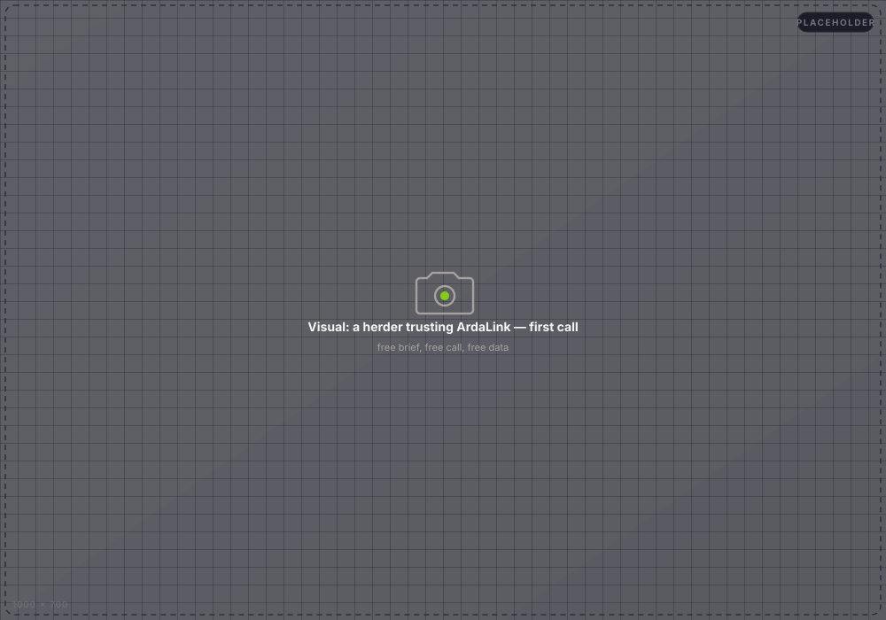
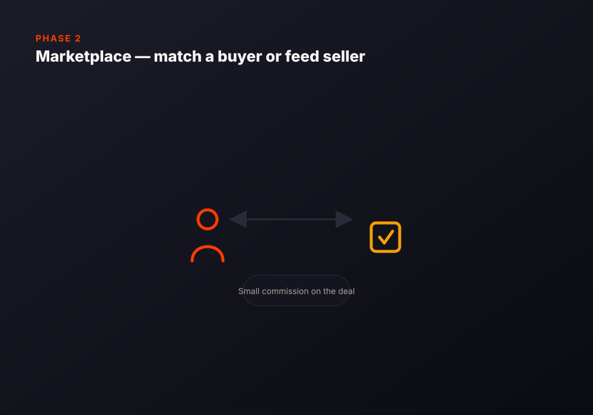

Free for the herder who needs it.
Sustainable because of who else does.
A drought warning that arrives two weeks early is worth more than most subscriptions a herding family could ever afford — so we don't charge for it. Here's what reaching every ward actually looks like, and how the model pays for itself.
Real satellite data. Real conversations. Not a pitch deck.
5 wards
Wabera, Bulla Pesa, Ngare Mara, Burat, and Oldonyiro — every active ward in Isiolo Sub-County covered today, not a single pilot village.
5-day refresh
Satellite vegetation and rainfall signal updates on a real schedule — not a one-time survey that goes stale, the way most public water-point data in the region already has.
Live on WhatsApp
Real pastoralists are already messaging ArdaLink today — sharing their location, asking about water and grazing, getting answers back. Voice and USSD carry the same intelligence to phones without WhatsApp.
Species-specific advice
Cattle, shoats, and camels can each reach different distances from water. The advisory is scoped to her actual herd — not a generic radius everyone gets the same answer from.
Trust doesn't have a price tag.
The herder ArdaLink serves is the one least able to pay for a warning she can't yet verify works. So the brief, the call, and the water-point lookup cost her nothing — trust has to come first, revenue comes from elsewhere.
We also don't sell or advertise against her data. What she tells us feeds back into a better answer for her and her neighbors next time — nothing else.

A small commission, only on a deal that actually closes.
Once a herder trusts ArdaLink for the free warning, the same channel can match her to a livestock buyer or a feed seller when she needs one. A small commission on a deal that actually closes — never a fee on the warning itself, never a subscription, never a cost to receive an alert.
This is Phase 2, sequenced deliberately after trust is established, not before — a marketplace nobody trusts is worth nothing to build first.

Herders first. Everyone downstream benefits too.
🐄 Pastoralist households
A two-week head start on a drought decision most families used to make blind — move the herd, buy feed, or wait.
🏛 County & NDMA partners
Early-warning bulletins today stop at the county desk. ArdaLink is the last mile that gets the same signal to the individual herder deciding tonight.
💧 Water-point operators
An operator console that lets a real person verify, correct, and audit which water points actually work — closing the loop on data that would otherwise silently go stale for years.
🔬 Funders & research partners
A working, tested pipeline — not a proposal. Real satellite ingestion, real multi-channel delivery, real conversations, all auditable in the open-source repo.